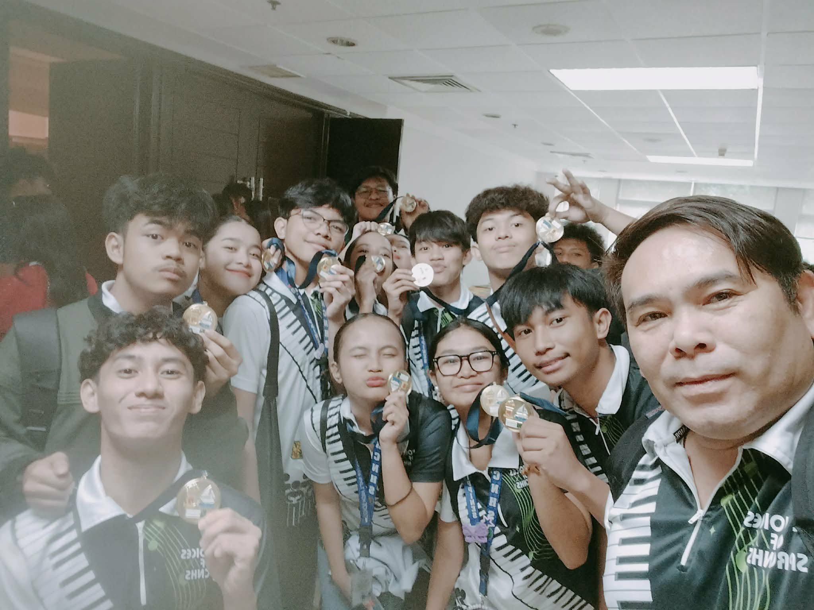
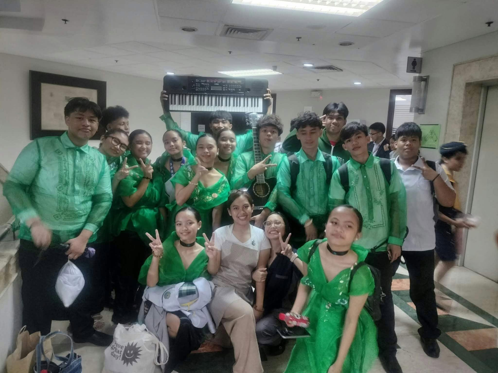
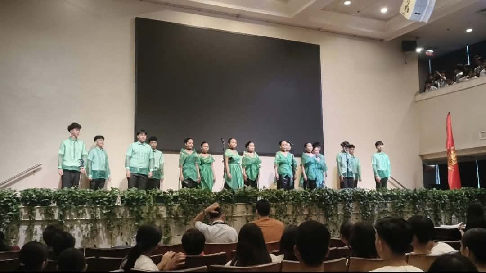

The Voices of SPRCNHS, the official choir of San Pedro Relocation Center National High School, proudly achieved First Place in the Choral Singing Event held at the University of Asia and the Pacific on November 22, 2025. Guided by their choral conductor, Sir Nivrem Mosqueda, and supported by the cachet coordinator, Sir Matthew Toledo, the choir delivered a strong and heartfelt performance that reflected months of practice, discipline, and teamwork.



The achievement was formally recognized during the Awarding Ceremony held on December 13, 2025. Winning First Place was a meaningful accomplishment for the choir and the entire school community. It brought pride and honor to San Pedro Relocation Center National High School and served as proof of the dedication, unity, and passion of everyone involved in the group.
GREEN AND WHITE SPRAKENHAYTS.